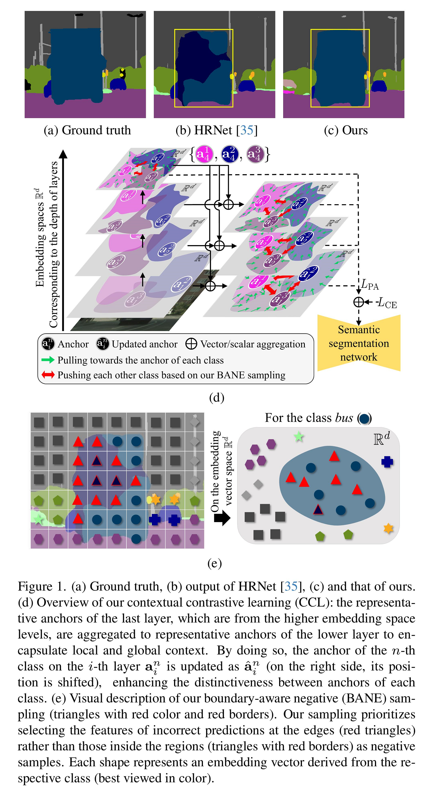
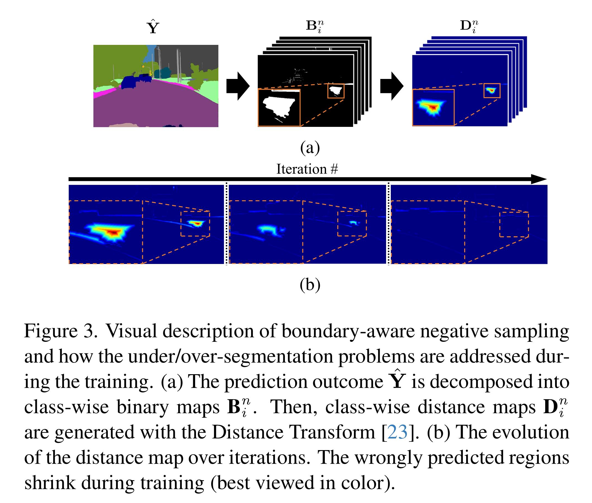

Overall Contextrast Framework

Overview

Boundary-aware sampling

Qualitative results

Despite great improvements in semantic segmentation, challenges persist because of the lack of local/global contexts and the relationship between them. In this paper, we propose Contextrast, a contrastive learning-based semantic segmentation method that allows to capture local/global contexts and comprehend their relationships. Our proposed method comprises two parts: a) contextual contrastive learning (CCL) and b) boundary-aware negative (BANE) sampling. Contextual contrastive learning obtains local/global context from multi-scale feature aggregation and inter/intra-relationship of features for better discrimination capabilities. Meanwhile, BANE sampling selects embedding features along the boundaries of incorrectly predicted regions to employ them as harder negative samples on our contrastive learning, resolving segmentation issues along the boundary region by exploiting fine-grained details. We demonstrate that our Contextrast substantially enhances the performance of semantic segmentation networks, outperforming state-of-the-art contrastive learning approaches on diverse public datasets, e.g. Cityscapes, CamVid, PASCAL-C, COCO-Stuff, and ADE20K, without an increase in computational cost during inference.
@misc{sung2024contextrast,
title={Contextrast: Contextual Contrastive Learning for Semantic Segmentation},
author={Changki Sung and Wanhee Kim and Jungho An and Wooju Lee and Hyungtae Lim and Hyun Myung},
year={2024},
eprint={2404.10633},
archivePrefix={arXiv},
primaryClass={cs.CV}
}